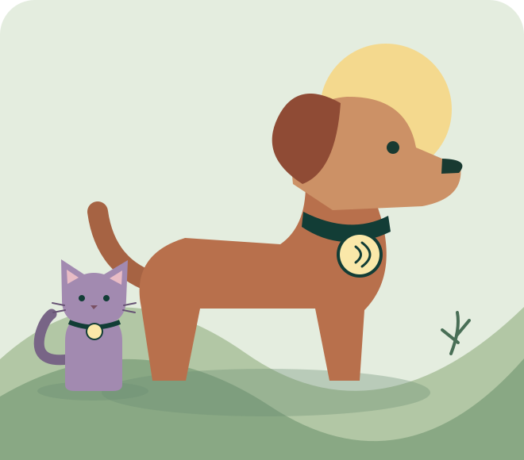

IDENTIFICACIÓN NFC PARA MASCOTAS
Un pequeño gesto.
Un camino de vuelta.
Si alguien encuentra a tu perro o a tu gato, una chapa en su collar o arnés le permite avisarte con su móvil, allí mismo.

PARA CADA PASEO
Su identificación, a mano.
El microchip de tu mascota es importante. Mientras quien la encuentra localiza a un veterinario o a un servicio que pueda leerlo, la chapa NFC le ofrece una forma de avisarte en ese mismo momento. Tú eliges qué datos de contacto compartir.
Ver los cuatro productos →CATÁLOGO MASCOTAS
La tienda
Cuatro formatos para collar o arnés.
TU SELECCIÓN
Tu cesta
Pedido
EN ESTE DISPOSITIVO
Mis pedidos
IDENTIFICACIÓN NFC
Mis chapas
Prepara una ficha y elige qué grabar. Tus borradores se guardan en este dispositivo.
PASO A PASO
Cómo funciona
¿Cómo se prepara una chapa?
En Mis chapas, guarda una ficha y elige grabar el enlace o el texto. Acerca un dispositivo NFC compatible cuando la app te lo pida y comprueba la lectura.
¿Cómo puedo abrir la ficha desde un iPhone?
Para compartir un enlace, grábalo como enlace NFC. La posibilidad de abrirlo al acercar el móvil depende del teléfono y sus ajustes. Para grabar en iPhone puedes usar una herramienta NFC compatible.
¿Sirve para localizar a mi mascota?
Es una ayuda de identificación por proximidad. Alguien tiene que encontrar la chapa y acercar su móvil. No proporciona localización GPS.
¿Los pedidos se cobran?
Puedes guardar tu selección en este dispositivo. El pago todavía no está disponible.
TU INFORMACIÓN
Privacidad
Qué guardamos y dónde
La cesta, los pedidos guardados y las fichas de mascotas se conservan en el almacenamiento local de tu navegador o de la app. Los formularios de esta versión no envían esos datos a TuInfoNFC Mascotas. La web se sirve por HTTPS y el proveedor de alojamiento puede tratar datos técnicos de conexión para servir la página y proteger el servicio.
Almacenamiento local
Se utiliza para recuperar la cesta y tus fichas y pedidos guardados. Los datos permanecen hasta que los elimines o borres el almacenamiento del navegador o de la app. Esta versión no incorpora analítica ni publicidad.
Tú decides qué compartes
Si grabas texto en una chapa, un móvil compatible puede leerlo al acercarse. Si grabas un enlace, la información que se abre depende del servicio externo y de sus permisos. Quitar un borrador de la app no cambia lo que ya está grabado en la chapa.
Gestionar tus datos
Puedes editar o quitar fichas desde Mis chapas, o borrar aquí los datos guardados de Mascotas en este dispositivo.
USO RESPONSABLE
Seguridad NFC
Comparte lo imprescindible
Usa un dato de contacto que quieras compartir con quien encuentre la chapa. Evita incluir tu dirección, documentos o contraseñas. Si grabas un enlace, comprueba que abre la página que quieres mostrar.
Comprueba tu chapa
Tras grabarla, separa el móvil y vuelve a acercarlo para comprobar la lectura. Repite la comprobación si actualizas tus datos o cambias de chapa. Si vas a entregar o reutilizar una chapa, borra su contenido y comprueba la lectura después.
Colocación
Comprueba que el accesorio encaja con el ancho y el cierre del collar o arnés. Revisa periódicamente la sujeción y retira la chapa si está dañada o queda floja.
Una forma adicional de contacto
La chapa facilita el contacto cuando alguien encuentra a tu mascota. Mantén actualizada también su identificación por microchip.
INFORMACIÓN DEL SERVICIO
Condiciones de uso
Catálogo y pedidos
El catálogo te permite guardar una selección en este dispositivo. Guardarla no tramita una compra ni activa un envío. El pago todavía no está disponible.
Identificación de tu mascota
Comprueba la compatibilidad del teléfono, de la chapa y de su sujeción. La persona que encuentre a tu mascota debe acercar un móvil compatible para leer la información y usar el contacto que hayas elegido.
Enlaces externos
Si grabas un enlace a otro servicio, su disponibilidad y los permisos de lectura dependen de ese servicio.
Envíos
Puedes elegir una zona de entrega y consultar el importe que muestra la cesta. El pedido se guarda en tu dispositivo. La contratación del envío, sus plazos y las tarifas definitivas se informarán antes de habilitar la compra.
Devoluciones
Las compras aún no están habilitadas. Cuando se habiliten, podrás consultar antes de comprar el procedimiento de devolución, los plazos, el canal de contacto y las condiciones aplicables a cada producto.
Garantía
Antes de habilitar la compra publicaremos la información sobre la garantía de los productos y el procedimiento para solicitar asistencia. Los derechos del consumidor serán los que correspondan a la compra.
Aviso legal
TuInfoNFC Mascotas ofrece información sobre accesorios NFC para mascotas y permite preparar fichas y selecciones de productos en el dispositivo. Los datos del titular y su canal de contacto se publicarán al habilitar la venta.
Contacto
El canal de atención comercial se publicará al habilitar la venta. Para dudas de uso, consulta cómo funciona la chapa y seguridad NFC.